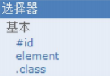
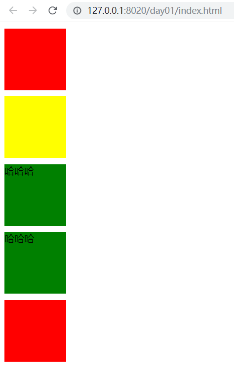
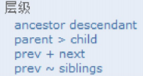
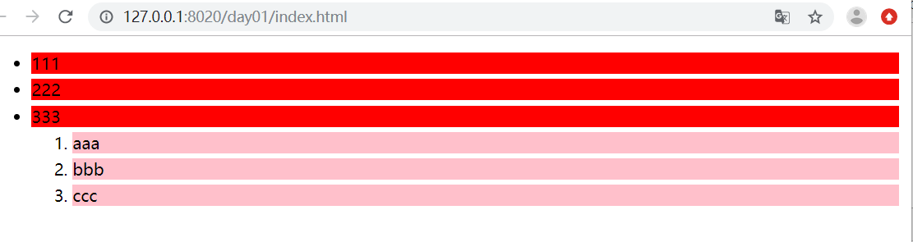
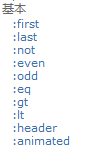
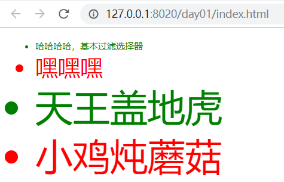
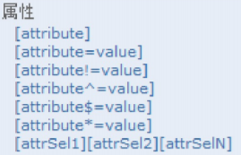
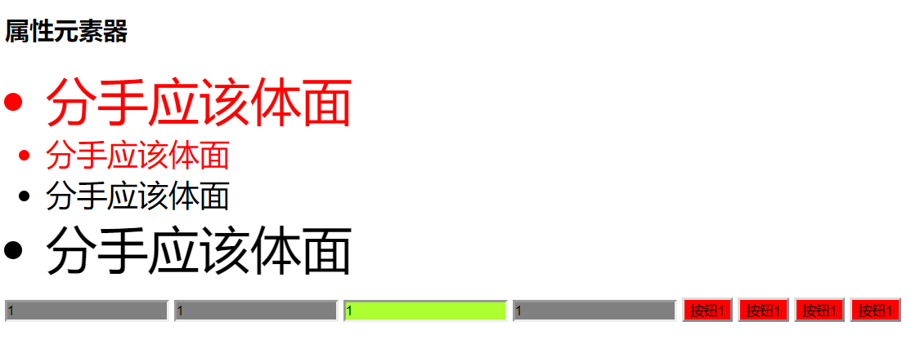

jQuery选择器是jQuery强大的体现，它提供了一组方法，让我们更加方便的获取到页面中的元素。

例子如下：
<!DOCTYPE html>
<html lang="en">
<head>
<meta charset="UTF-8">
<title></title>
</head>
<body>
<div></div>
<div id="box"></div>
<div class="box"></div>
<div class="box"></div>
<div></div>
<script type="text/javascript" src="js/jquery-2.1.0.js"></script>
<script type="text/javascript">
//入口函数
$(function(){
//三种方式获取jquery对象
var jqBox1 = $("#box");
var jqBox2 = $(".box");
var jqBox3 = $('div');
//操作标签选择器
jqBox3.css('width', '100');
jqBox3.css('height', 100);
jqBox3.css('background-color', 'red');
jqBox3.css('margin-top', 10);
//操作类选择器(隐式迭代，不用一个一个设置)
jqBox2.css("background", "green");
jqBox2.text('哈哈哈')
//操作id选择器
jqBox1.css("background", "yellow");
})
</script>
</body>
</html>

A B，获得A元素内部的所有的B元素。(祖先) -- 后代
A > B，获得A元素下面的所有的B元素。(父子)
A + B，获得A元素同级下一个B元素。(兄弟)
A ~ B，获得A元素同级所有的B元素。(兄弟)
例子如下：
<!DOCTYPE html>
<html>
<head lang="en">
<meta charset="UTF-8">
<title></title>
<script src="js/jquery-2.1.0.js"></script>
<script>
$(function () {
//获取ul中的li设置为粉色
//后代：儿孙重孙曾孙玄孙....
var jqLi = $("ul li");
jqLi.css("margin", 5);
jqLi.css("background", "pink");
//子代：亲儿子
var jqOtherLi = $("ul>li");
jqOtherLi.css("background", "red");
});
</script>
</head>
<body>
<ul>
<li>111</li>
<li>222</li>
<li>333</li>
<ol>
<li>aaa</li>
<li>bbb</li>
<li>ccc</li>
</ol>
</ul>
</body>
</html>

:first 第一个
:last 最后一个
:not(...) 删除指定内容。例如：1234：not(3) --> 124
:even 偶数，从0开始计数 -- 操作索引号，页面显示奇数项
:odd 奇数
:eq(index) 等于index
:gt(index) 大于index
:lt(index) 小于index
--------------------------------------------------------
:header 获得标题（<h1>/<h2> ...）
:animated 获得动画的
:focus 获得焦点例子如下：
<!DOCTYPE html>
<html>
<head>
<meta charset="UTF-8">
<title>基本过滤选择器</title>
</head>
<body>
<ul>
<li>哈哈哈哈，基本过滤选择器</li>
<li>嘿嘿嘿</li>
<li>天王盖地虎</li>
<li>小鸡炖蘑菇</li>
</ul>
</body>
<script src="js/jquery-2.1.0.js"></script>
<script type="text/javascript">
$(function(){
//获取第一个 :first ,获取最后一个 :last
//奇数
$('li:odd').css('color','red');
//偶数
$('li:even').css('color','green');
//选中索引值为1的元素 *
$('li:eq(1)').css('font-size','30px');
//大于索引值1
$('li:gt(1)').css('font-size','50px');
//小于索引值1
$('li:lt(1)').css('font-size','12px');
})
</script>
</html>

[属性名] 获得有属性名的元素。
[属性名=值] 获得属性名等于值的元素
[属性名!=值] 获得属性名不等于值的元素
[...][...][...] 复合属性选择器，多个属性同时过滤。where...and...and...
---------------------------------------------------------
[属性名^=值] 获得属性名以值开头的元素
[属性名$=值] 获得属性名以值结尾的元素
[属性名*=值] 获得属性名含有值的元素例子如下：
<!DOCTYPE html>
<html>
<head>
<meta charset="UTF-8">
<title></title>
</head>
<body>
<div id="box">
<h2 class="title">属性元素器</h2>
<!--<p class="p1">我是一个段落</p>-->
<ul>
<li id="li1">分手应该体面</li>
<li class="what" id="li2">分手应该体面</li>
<li class="what">分手应该体面</li>
<li class="heihei">分手应该体面</li>
</ul>
<form action="" method="post">
<input name="username" type='text' value="1" checked="checked" />
<input name="username1111" type='text' value="1" />
<input name="username2222" type='text' value="1" />
<input name="username3333" type='text' value="1" />
<button class="btn-default">按钮1</button>
<button class="btn-info">按钮1</button>
<button class="btn-success">按钮1</button>
<button class="btn-danger">按钮1</button>
</form>
</div>
</body>
<script src="js/jquery-2.1.0.js"></script>
<script type="text/javascript">
$(function(){
//标签名[属性名] 查找所有含有id属性的该标签名的元素
$('li[id]').css('color','red');
//匹配给定的属性是what值得元素
$('li[class=what]').css('font-size','30px');
//[attr!=value] 匹配所有不含有指定的属性，或者属性不等于特定值的元素
$('li[class!=what]').css('font-size','50px');
//匹配给定的属性是以某些值开始的元素
$('input[name^=username]').css('background','gray');
//匹配给定的属性是以某些值结尾的元素
$('input[name$=222]').css('background','greenyellow');
//匹配给定的属性是以包含某些值的元素
$('button[class*=btn]').css('background','red')
})
</script>
</html>